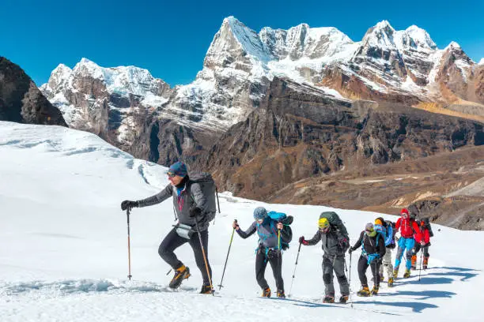
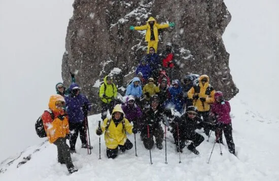
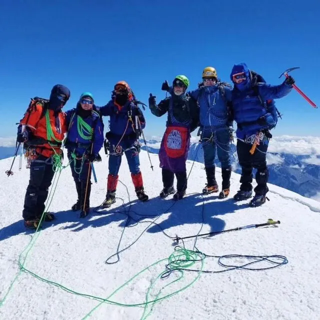

Our Mission
Our mission as a Chimborazo mountaineering club is to be able to provide our clients with the best experience in this passionate sport of adventure sports, mountaineering, hiking, mountain climbing, taking into account the safety of our clients as well as the health of each one of them since this allows us to continue progressing forward as a Club and providing more service to more tourists. It is also to be able to, through our Club, continue to make it known throughout Ecuador and especially around the world so that they can learn more about our mountaineering Club..
Our History
Our history as a mountaineering club group goes back 10 years. First, with a group of friends from school, we really liked adventure. We liked hiking, being able to walk, being able to discover mountains, landscapes, and many other things. In 2010, we set the goal of climbing Chimborazo, which is the highest mountain in South America and is considered to be closest to the sun. We liked adventure. We started going to different places, other mountains in the city of Riobamba, apart from climbing Chimborazo, going to the altar, and so we transcended year after year, getting to know new places, getting to know cliffs, getting to know waterfalls, and after a long time with this group of friends, we entered university and began to study tourism. One day, in a group project, we had the idea that maybe at some point we could start a mountaineering guide club to help many tourists who come here to the city of Riobamba so they can climb Chimborazo. That's how our history and everyone had different ideas of how we could approach this and on November 15, 2018 we decided to form our high-elite mountaineering club. We started little by little, first among five people, setting a budget and thus we transcended so that our mountaineering club could emerge and so we have seen that until today it has been very successful so that we can continue providing our service to all the tourists who desire and love this sport of mountaineering.
Our success
share our success as a Chimborazo mountaineering club we have seen a lot a lot of success but also full of challenges since it is not easy at all since sometimes there are days when there are not many tourists that trust in our Club but but to a great extent we have seen success Since when we started only a year I think that five people were the ones that trusted in our Club and and they decided to count on us so that they could climb Chimborazo but through perseverance through the advertising that we have done also by being able to make announcements throughout a lot of effort both on my part as manager and my colleagues we have seen a lot of success by being able to revolutionize more every day the advertising of marketing so that these people can be able to make themselves known on social networks and well and as per the efforts that we have made today we can count on a large part of people who want to climb Chimborazo with our Club and we are very very happy and very happy for that to see so much success in these almost 8 years as a mountaineering club
Our Team
As part of our team, the mountaineering club currently has 20 workers, 10 of them are tourist guides specialized in mountaineering. In addition, each one has a license and licenses that have been certified by the Ministry of Tourism of Ecuador so that they can have evidence and a knowledge base about the mountains, since this allows the person who is leading to have security. In addition, we have the latest technology equipment with many of the necessary materials to be able to go mountaineering. I think that is something transcendental that has also characterized us for having the security of the people we take to the mountains and that they can have an unforgettable experience and, above all, can continue to get to know more mountains of Chimborazo.